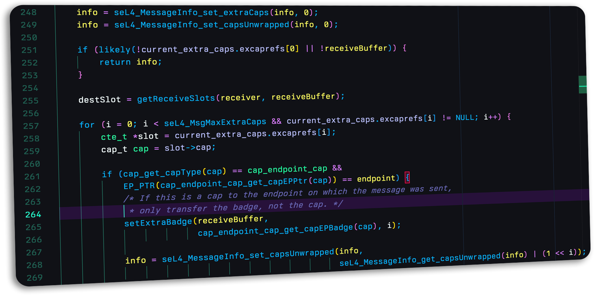

We welcome and encourage community contribution to the seL4 ecosystem. Given the application areas of seL4, quality control and assurance are imperative. Read on to learn how and where you can contribute, and how to get your contributions accepted.
 ' layout: card redirect_from: /Contribute/home.pml ---Code, proof, and documentation contributions are via pull requests on repositories in the seL4 GitHub org. To increase the likelihood that your pull request receives interest and reviews, please follow the guidelines on the page for coding conventions and requirements. The developer certificate of origin requirement applies to all pull requests, including documentation and proof contributions.
In general, quality assurance requirements are highest for kernel contributions. They are more standard and faster-paced for user-level frameworks and libraries.
Note that larger changes, such as an architecture port, or adding a new feature to the kernel, requires a RFC first, in which you describe the change and get feedback from the community. Contributions to user-level frameworks and libraries are less formal, but we still recommend that you discuss any larger contributions with the community before starting work on them.
Anyone can help review pull requests, but only people that have been granted the Committer role by the Technical Steering Committee can merge them. Committers are the people responsible for maintaining the quality and correctness of the code.
For the specific case of contributing a platform port, please read the platform contributions guide. The seL4 docsite has additional guidance for kernel contributions, as well as guidance for contributing to the docsite itself.